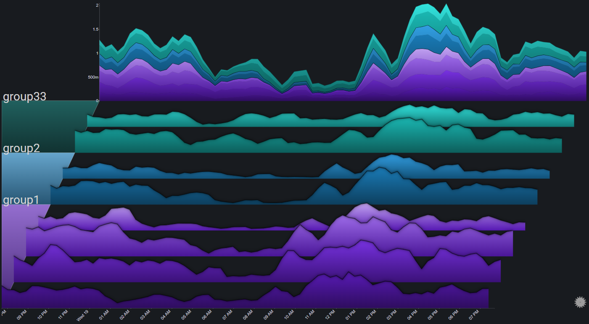

Getting Started#
The following examples can be used to get a better practical sense of how Sierra Plots work
Each example contains the source data (in csv format) and a sample dashboard JSON file
To load the data into Grafana, the CSV Datasource plugin is required
When using the CSV Datasource, the prepare time series transformation needs to be used (already configured in the sample dashboard JSONs)
Note
The data used in the following examples should not be used for any actual analysis. Some of the data is completely generated, while some is based on real-world data sets, but with modifications made just for the purpose of these examples
Servers#
Based on this example
Dataset: CSV
Dashboard: JSON
Servers Errors#
Based on this example
Dataset: CSV
Dashboard: JSON
Mortality Rates#
Based on this example
Dataset: CSV
Dashboard: JSON
Covid-19#
Based on this example
Dataset: CSV
Dashboard: JSON

Promethues Datasource#
The following example uses the standard Prometheus data source and uses the metric for the CPU utilization of the Prometheus server
Dashboard: JSON

TestData DB Datasource#
The following example uses the default TestData DB data source
Dashboard: JSON